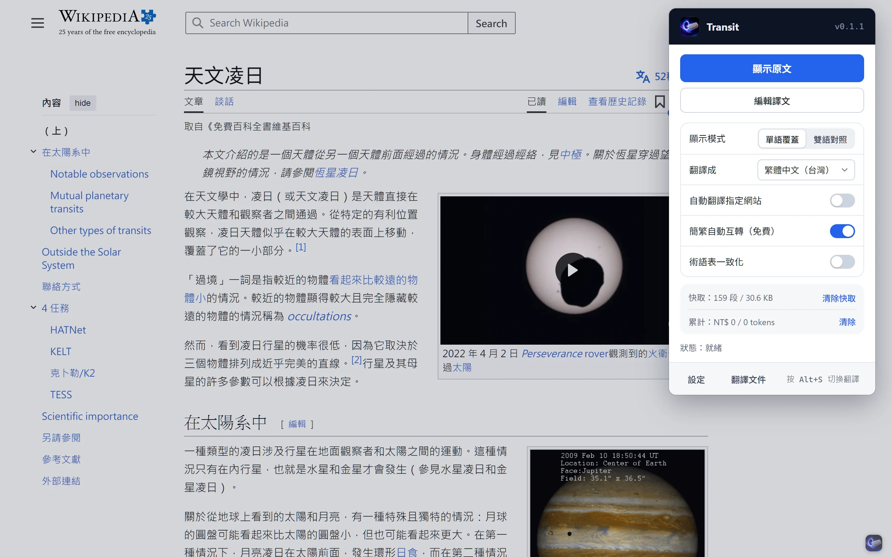
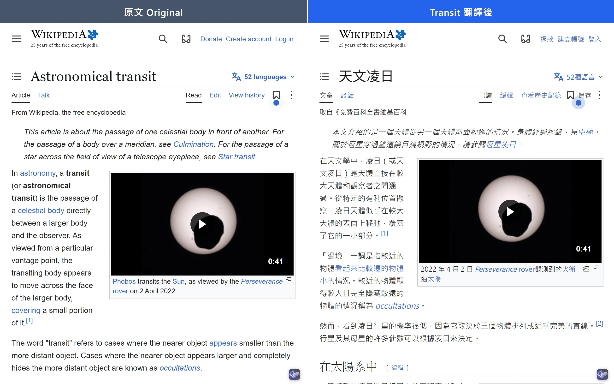
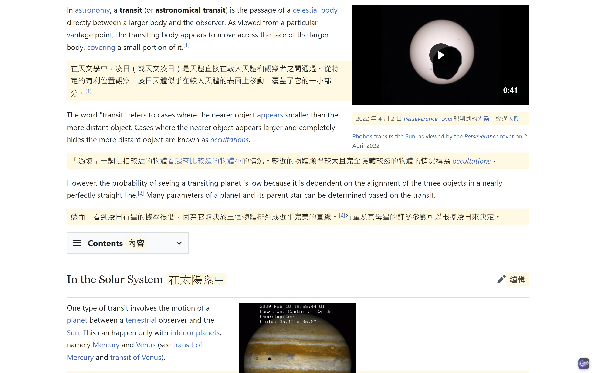

翻譯整份文件
拖進 PDF、EPUB、Word 或字幕檔, 整份翻譯後下載。PDF 會保留原本的版面。
已翻譯 6 個檔案
 transit-of-venus.pdfPDF
transit-of-venus.pdfPDF- cosmos.epubEPUB
- report.docxWord
 README.mdMarkdown
README.mdMarkdown- guide.htmlHTML
- observing-notes.pdfPDF
免費 · 8 種目標語言 · Chrome、Edge、Brave
按 Alt+S 翻譯整頁。譯文直接取代原文, 保留排版與連結。沒有 API Key 也能用 Google Translate 翻譯。

譯文放回原本的段落。字型、圖片和連結都留在原處, 連結仍然可以點。下圖是同一篇 Wikipedia 文章翻譯前後的樣子。
查看其他翻譯功能
拖進 PDF、EPUB、Word 或字幕檔, 整份翻譯後下載。PDF 會保留原本的版面。
切換到雙語對照, 每段原文下方會加上譯文, 適合對照閱讀或學語言。

內建 OpenCC 字典在本機轉換, 不呼叫任何 API。詞組使用台灣慣用詞。
自動抓取字幕並即時翻譯。切換到雙語對照時, 原文和譯文會同時顯示。
Transit 不經過任何中繼伺服器。要翻譯的文字直接送到你選擇的翻譯引擎, 使用本機模型時資料不經過第三方。
翻譯時送出的資料
先用主要翻譯, 失敗時自動改用備援翻譯。沒有 API Key 時, 直接用免費的 Google Translate。
不用, Transit 免費。使用 Gemini 時, API 費用由 Google 向你的帳號收取。
網頁和 YouTube 字幕不用, 沒有 API Key 時會用 Google Translate 翻譯。翻譯文件需要 Gemini 或自訂模型的 API Key。
只送到你選擇的翻譯引擎。Transit 沒有自己的伺服器, 也不收集使用資料。
繁體中文、簡體中文、英文、日文、韓文、西班牙文、法文和德文。
從 GitHub 下載 zip 並解壓縮。在 chrome://extensions 開啟開發人員模式, 再載入未封裝項目。